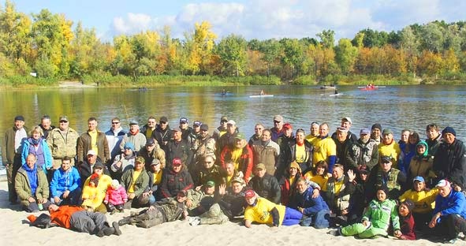

НАШЕМУ ДОМИКУ ИСПОЛНЯЕТСЯ 21 ГОД!
Празднования пройдут в кафе "Голосієво" на станции проката катамаранов и лодок. Ст. метро Голосеевская _
у озера _ 20 июня с пивом, рыбой и прочими излишествами! Приглашаются Домовые и их друзья, желающие
пообщаться вживую! Пива и вод хватит всем, а Друзья до дома доведут и в радости не бросят!
Обсуждения, отчёты, фотокомпозиции и заблудившихся мужей _ искать на ФОРУМЕ...

20.06.2018 оРгКоМиТеТъ
Азарт! Вот, что объединяет все живое!
Азарт _ это игра! Оттого мы с таким удовольствием играем в эту короткую игру под названием ЖИЗНЬ!
Есть много способов испытать острые ощущения, встряхнуть свои дремлющие инстинкты и получить в
награду великое чувство ПОБЕДЫ! Из них три самых древних _ РЫБАЛКА, ОХОТА, ВОЙНА... Первые два
разделены лишь средой обитания добычи, а третий тоже охота, но на себе подобных... Вообще человек
существо непредсказуемое и агрессивное со здоровой долей тупости в мозгу. Гены наши знают многое,
потому бурлящая в жилах кровь возвращает нам те древние чувства, благодаря которым мы и выжили в
этом прекрасном и опасном мире. Так не пора ли открыть эту кладовую хранящуюся внутри каждого из нас
и впрыснуть в кровь свежего адреналина!
Когда в последний раз ВЫ видели рождение света и восход огненного светила? А закат и рождение мрака?
Когда в последний раз ВАС трепал ураган и ливень холодной рекой смывал с ВАС грязь цивилизации?
Когда в последний раз ВЫ искали дорогу домой?
Спешите! Пока ЭТО ЕСТЬ! Пока можно встретить и увидеть те места, где природа еще похожа на
ДЕВСТВЕННУЮ! СКОРО И ЭТОГО НЕ БУДЕТ!!! Итак, ДОБРО ПОЖАЛОВАТЬ В ДОМ РЫБАКА! А дальше... А дальше,
как Бог даст :_))
22.06.1998 Webmaster Vic
РЫБАЦЮГИ КИЕВА! По сложившейся традиции в г.Киеве каждый ЧЕТВЕРГ в 18_00 при выходе
со станции метро "ДНЕПР", в пивбаре_стекляшке "Оболонь" проходят встречи ДОМОВОГО народа! Все
желающие, знакомые и незнакомые, рыбацюги и не очень, жаждущие пообщаться в живую _ приглашаются
ВСЕГДА:))
22.06.1998 Webmaster Vic